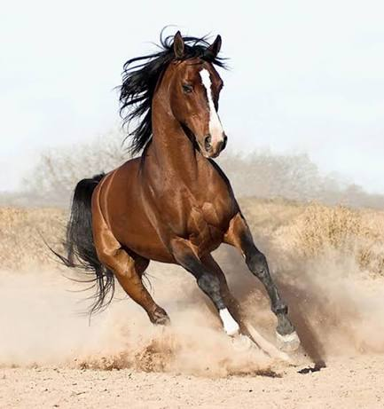

Арабський кінь є однією з найвідоміших порід коней у світі. Він відомий своєю витривалістю, елегантною зовнішністю та характерною формою голови. Ця порода має давню історію та протягом багатьох століть цінувалася за свої фізичні якості, швидкість і здатність долати великі відстані. Арабські коні також вирізняються гармонійною будовою тіла та граційними рухами.Представники цієї породи мають гармонійну будову тіла, добре розвинену мускулатуру та відзначаються високою витривалістю під час тривалих переходів. Вони мають міцні ноги, легку будову та добре розвинену грудну клітку. Завдяки своїм фізичним особливостям арабські коні можуть тривалий час працювати без значного зниження темпу. Крім того, вони відомі своєю активністю та здатністю швидко реагувати на команди вершника.
Арабські коні використовуються у кінному спорті, розведенні та різних видах кінного туризму. Порода має велике значення для розвитку багатьох сучасних порід коней. Їх використовують у змаганнях на витривалість, а також для покращення фізичних характеристик інших порід під час селекційної роботи. Завдяки своїй зовнішності та хорошим робочим якостям арабські коні залишаються популярними серед любителів коней у різних країнах. Арабський кінь відомий у всьому світі.